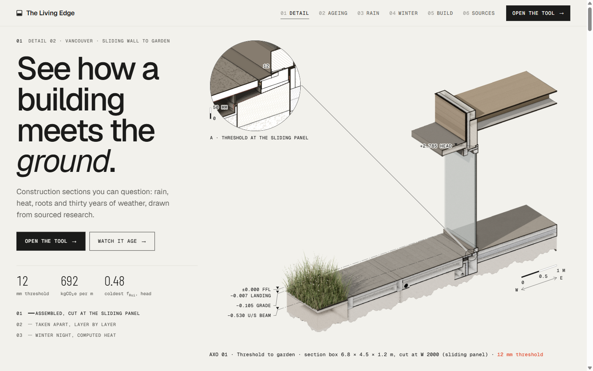
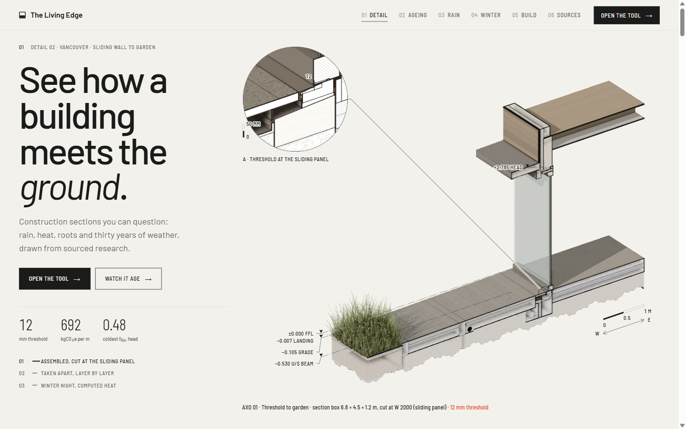
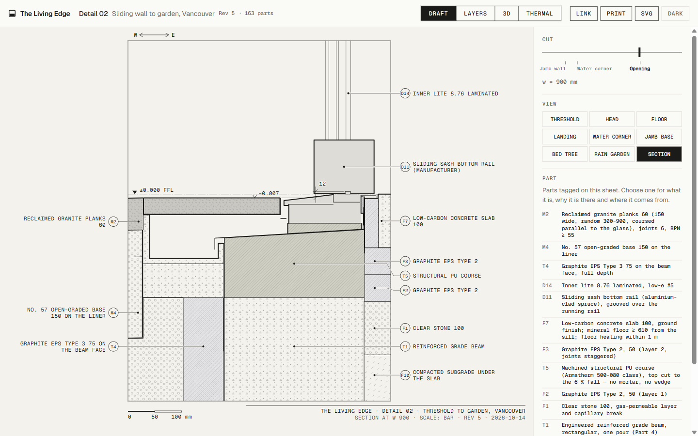
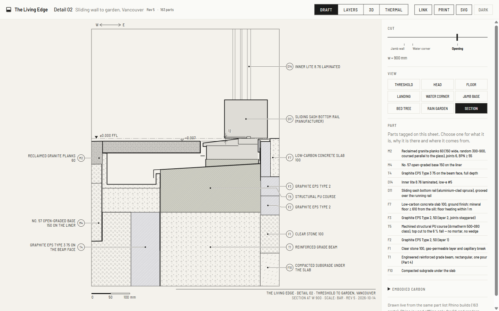
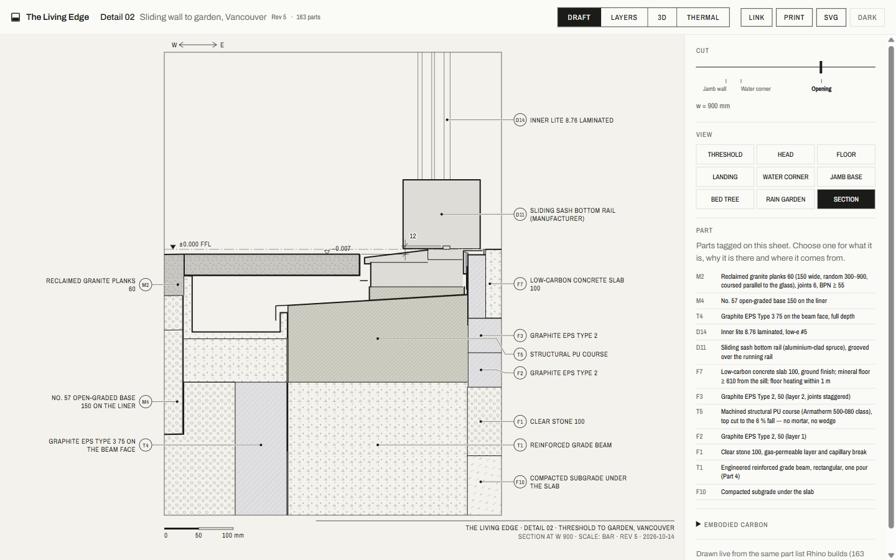
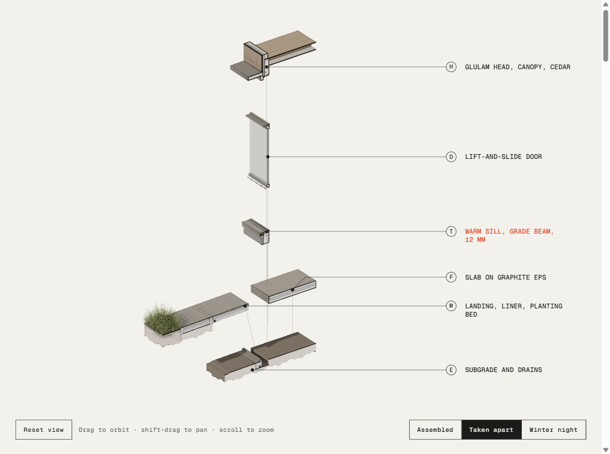
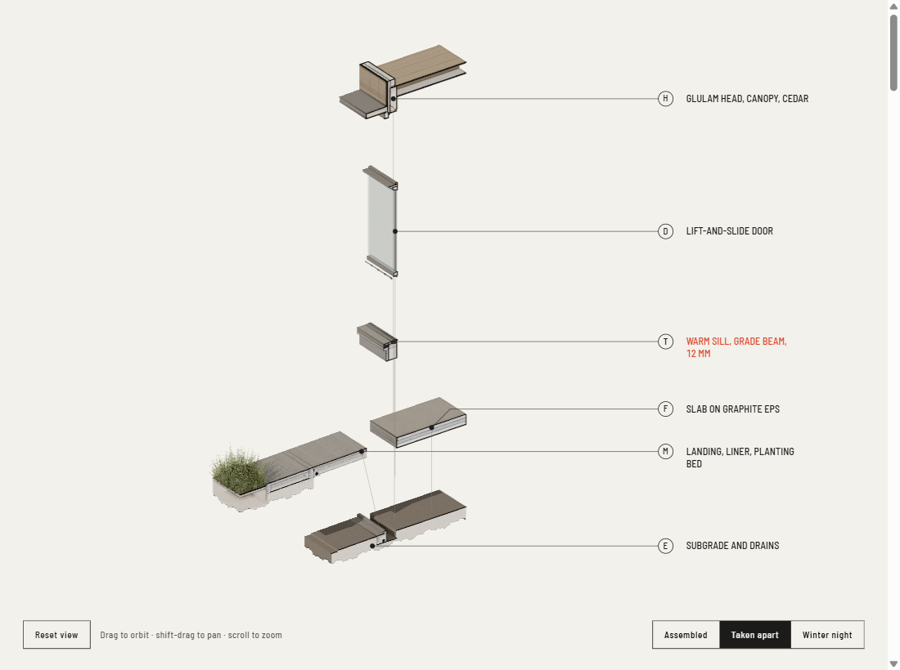
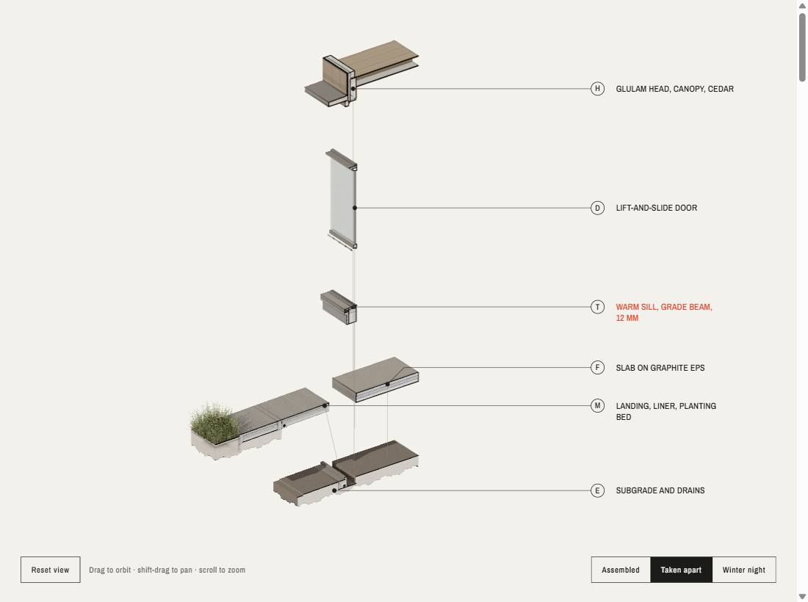
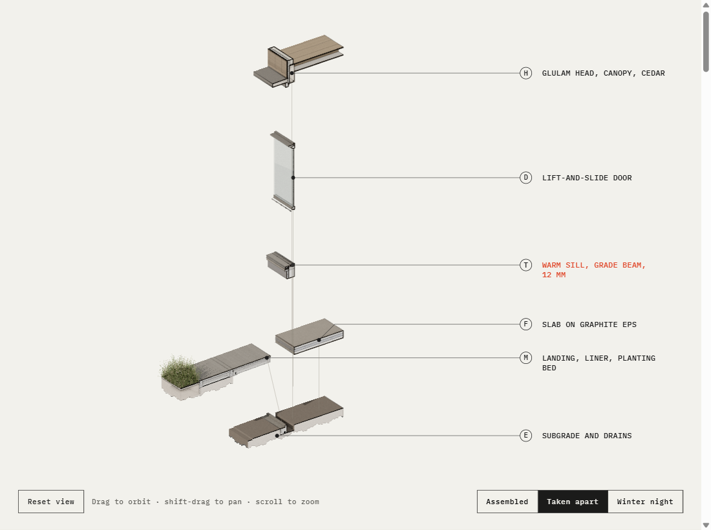

Typeface candidates for Living Edge
Decision, 15 October 2026: 1 · DIN lineage. It is now applied to the landing page, the tool and the drawing labels. The tool's long part descriptions use regular Barlow; tags and drawing labels use Barlow Semi Condensed. Applied captures: hero, draft, thermal, phone.


The previous fonts, Geist and Geist Mono, had been picked in an earlier session and were never chosen by you. Each candidate below comes from a real lettering tradition. They are shown on the same three views, and only the fonts change. Click any image for full size.
Landing hero






Tool · Draft section with labels







Tool · 3D, taken apart








These are mock-ups only: fonts were swapped at capture time and no source has changed. References: DIN 1451 (Wikipedia), ISO 3098 technical lettering (Roymech summary).